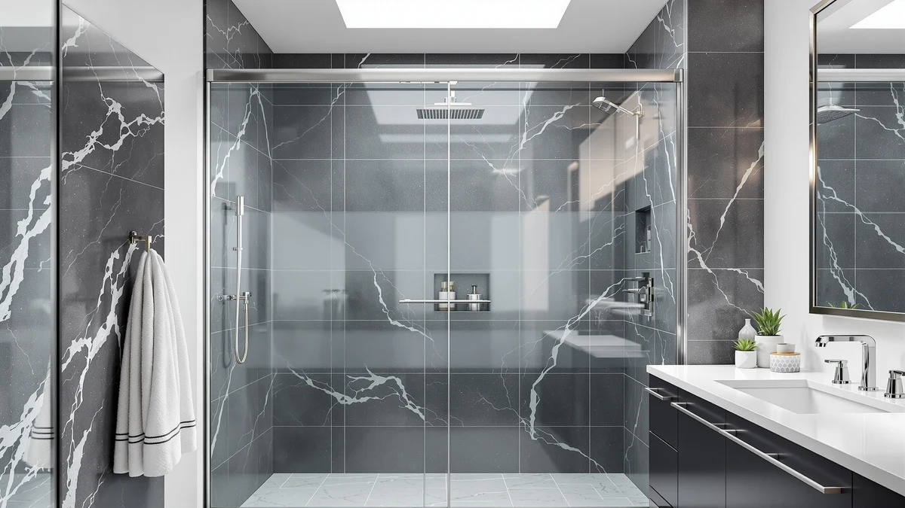

Frosted Shower Doors vs Clear: Which Is Better? (2026)
Prices and picks verified as of November 2026. Independent, reader-supported reviews.


Things to Know Before You Buy
- Frosted glass hides water spots and soap film better than clear glass, which shows every streak between cleanings.
- Clear glass makes a small bathroom feel more open because sightlines carry through to the far wall.
- Both styles use the same tempered safety glass underneath; the difference is the surface treatment, not the strength.
- A fully frosted panel costs more than clear glass of the same size, but a partial frosted strip closes most of that price gap.
- Frosted glass needs slightly more frequent squeegeeing since its textured surface holds soap scum a bit longer.
Frosted shower doors vs clear is a trade between privacy and the sense of space a bathroom gives off. Both use the same tempered glass and the same frameless or framed hardware, so the choice comes down to how the surface treatment affects what you see, how often you clean, and what the door costs installed.
We compared current Amazon pricing, manufacturer spec sheets, and patterns in verified owner reviews across both glass styles to see where each one actually pulls ahead. Clear glass tends to win on perceived room size and minimal upkeep, while frosted glass wins on privacy and forgiving water spots, so the right pick depends on your bathroom layout and who shares it.
Quick Answer
Clear glass is the better default for most bathrooms because it keeps a small room feeling open and shows off tile work, while frosted glass earns its place in shared bathrooms, street-facing windows, or anywhere privacy matters more than square footage. Neither one is objectively stronger; both use the same tempered glass, so the decision is about sightlines and cleaning habits, not durability.
What is Frosted Shower Doors?
A frosted shower door starts as the same tempered safety glass used in clear panels, then goes through an acid-etching or sandblasting step that roughens the surface at a microscopic level. That texture scatters light instead of letting it pass straight through, so the glass turns translucent rather than transparent. You can still tell when someone is in the shower, but you cannot make out detail.
Manufacturers sell frosted doors in a few configurations: fully frosted panels, partially frosted bands across the middle of the door, and frosted patterns etched into specific sections. A partial band is popular because it keeps the top and bottom of the door clear, which preserves some of the open feel of glass while still blocking the view at eye level.
In the frosted shower doors vs clear comparison, frosted glass costs more at the fully-etched end because the etching is an extra manufacturing step on top of tempering. Partially frosted designs land closer to standard clear pricing since less of the panel receives treatment. The hardware, hinges, and sliding tracks are identical to what ships on clear models from the same brand.
What is Clear?
Clear shower doors use the same tempered glass as frosted ones, without the etching step, so light passes straight through with no diffusion. That transparency is why clear glass reads as more modern and makes small bathrooms look bigger than they are, since your eye travels past the door to the tile and fixtures behind it.
Most clear glass sold today ships with a factory coating, often marketed as an anti-spot or hydrophobic finish, that helps water bead up and run off instead of drying into visible mineral spots. Owners report that coated clear glass still needs regular squeegeeing in hard water areas, but the coating buys extra time between deep cleans compared to uncoated glass.
Clear glass is the default option across nearly every frameless and framed shower door line because it photographs well and suits most bathroom styles. In the frosted shower doors vs clear decision, clear glass is usually the cheaper of the two at a given size, since there is no added etching cost, though a premium anti-spot coating can close part of that gap.
Head-to-Head: Build Quality & Durability
Build quality in the frosted shower doors vs clear comparison comes down to the glass itself and the hardware, not the surface finish. Both styles use 3/8-inch tempered safety glass in most frameless models sold on Amazon, rated to the same impact and shatter standards. Frosted etching does not weaken the glass; it is a surface treatment applied after tempering, so the structural rating stays the same.
Long-term wear is the one area the two diverge slightly. The microscopic texture on frosted glass can trap hard water minerals in its ridges over years of use, and some owners note that deep mineral buildup is harder to fully remove from frosted surfaces than to wipe off smooth clear glass. Clear glass with a quality coating tends to look new for longer with routine squeegeeing, while frosted glass can develop a slightly duller patch pattern in high-mineral water if it is not cleaned regularly.
Hardware durability, meaning hinges, rollers, and tracks, is identical across both glass types since it is sold by the same manufacturers using the same components. Reviewers consistently note that hinge and track failures are brand-specific issues, not glass-style issues, so pick based on brand reputation and not whether the panel is frosted or clear.
Head-to-Head: Price & Value
Current Amazon pricing shows a real gap in the frosted shower doors vs clear price comparison. Fully frosted or acid-etched panels in a given size typically run noticeably higher than the clear equivalent from the same brand, since the etching adds a manufacturing step. A partially frosted design, where only a band across the door is treated, usually narrows that gap to a modest premium over clear glass.
Clear glass with a factory anti-spot coating can sometimes cost close to what a partial frosted panel does, so shoppers comparing value should look at the specific configuration rather than assuming clear is always cheaper. Over a multi-year ownership period, the price difference between the two styles is small relative to the total cost of a shower door installation, so privacy needs should drive the decision more than the modest cost gap.
For buyers on a tight budget, a partial frosted band or frosted window film applied to clear glass delivers most of the privacy benefit without paying for a fully etched panel.
Head-to-Head: Use Experience
Day-to-day, the frosted shower doors vs clear difference shows up most in cleaning routine and how the bathroom feels. Owners report that clear glass needs a squeegee pass after most showers to stay spot-free, especially in hard water regions, because every drip and mineral deposit is visible against the transparent surface. Frosted glass hides those same spots, so it tolerates a few skipped cleaning days without looking neglected.
That forgiveness comes with a trade-off: frosted glass's textured surface holds onto soap scum in a way smooth clear glass does not, so when it is time for a real cleaning, frosted panels can take a bit more scrubbing to fully restore. Reviewers who installed frosted doors in shared or multi-person bathrooms consistently cite privacy as the main win, since someone can shower with the door closed and a family member can use the sink without an unobstructed view.
Clear glass wins on perceived light and space. Verified buyers in small bathrooms frequently mention that clear panels make the room look larger and let natural light from a window carry across the whole space, which frosted glass partially blocks depending on how much of the panel is etched.
When to Choose Frosted Shower Doors
Choose frosted glass when privacy matters more than visual openness. Shared bathrooms, homes with roommates or multiple generations under one roof, and bathrooms with a window facing the street or a neighbor's yard all benefit from the coverage frosted glass provides. In the frosted shower doors vs clear decision, this is the scenario where the frosted upcharge is worth paying.
Frosted glass also makes sense if hard water spots have been a recurring complaint in your household, since the textured surface hides mineral buildup between cleanings far better than clear glass does. If your bathroom already leans toward a spa-like or minimalist aesthetic, a frosted band at eye level with clear glass above and below can deliver privacy without losing the open feel entirely.
Skip frosted glass if your bathroom is small and relies on the shower door to keep the room feeling open, since the reduced transparency works against that goal.
When to Choose Clear
Choose clear glass when the bathroom is small, dim, or you want the tile and fixtures to stay visible as part of the room's design. In the frosted shower doors vs clear comparison, clear glass is the stronger pick anywhere maximizing light and perceived space is the priority, such as a guest bathroom or a primary bath you are trying to show off.
Clear glass also fits households where privacy is not a concern, such as a single-occupant bathroom or a shower that is not visible from a hallway or adjacent room. If you are willing to squeegee after most showers, a coated clear panel will stay looking close to new for years, and it is typically the lower-cost option at a matching size.
Skip clear glass if the bathroom door or window creates a sightline problem, or if frequent squeegeeing is not realistic for your household's routine.
Our Top Picks
Since clear comes out ahead for most bathrooms in the frosted shower doors vs clear comparison, the picks below are the clear-glass frameless doors from the current Amazon lineup we researched, spanning budget, mid-range, and premium price points.

Editor's Pick
KPUY Frameless Shower Door 55-60"
A frameless clear-glass sliding door sized for 55-60 inch openings, built with the anti-spot coating that makes squeegeeing worthwhile.
$499.96
Check Price on Amazon
Also Great
ENSO SENKA 56-60" W x
A 56-60 inch sliding door from ENSO SENKA that undercuts the Editor's Pick on price while keeping the same clear-glass panel size range.
$269.99
Check Price on Amazon
Best Value
Frameless Shower Door Matte Black
A matte black frameless clear-glass door from Ogonbrick, the lowest-priced option in this lineup for anyone prioritizing budget over coating extras.
$249.30
Check Price on AmazonFrequently Asked Questions
Do frosted shower doors show water spots less than clear glass?
Yes. The etched or acid-washed surface on frosted glass scatters light unevenly, which hides mineral spots and soap film that show up clearly on transparent glass. Owners with hard water report fewer visible streaks between cleanings on frosted panels.
Is frosted glass harder to clean than clear glass?
The textured surface traps a bit more soap scum in its microscopic ridges, so frosted doors often need a squeegee pass or a vinegar wipe-down slightly more often. Clear glass with a hydrophobic coating sheds water faster and resists buildup for longer stretches.
Which is better for a small bathroom, frosted or clear?
In the frosted shower doors vs clear comparison for tight layouts, clear glass generally reads as more open because it lets sightlines run through to the far wall and tile. Frosted panels can visually shrink a small bathroom slightly, though a partial frosted band still keeps most of that open feel while adding privacy.
Do frosted shower doors cost more than clear ones?
Fully frosted or acid-etched panels typically run higher than standard clear tempered glass of the same size, since the etching is an added manufacturing step. Partially frosted designs land closer to clear pricing because only a strip of the panel receives the treatment.
Can you switch from clear to frosted glass without replacing the whole door?
Frosted window film is a common way to add privacy to an existing clear door without buying new glass. It will not match the durability of factory-etched glass over years of daily steam and scrubbing, but it is the lower-cost route for a rental or a short-term fix.
Final Verdict
In the frosted shower doors vs clear comparison, clear glass is the right call for most bathrooms because it keeps the room feeling open and costs less at a matching size, and the KPUY frameless door above is a solid example of that value at $499.96. Frosted glass still wins where privacy outranks square footage, since a shared bathroom or a street-facing window gets more real benefit from hidden sightlines than from a brighter-looking room.